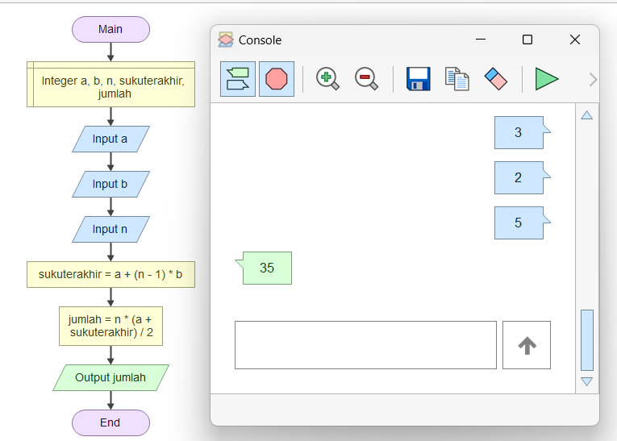

Algoritma untuk Menghitung Jumlah Deret Aritmatika
by Sulthan Adam Rahmadi - 240605110109
Posted on August 28, 2024 at 11:50 PM
Pengertian Algoritma
Algoritma adalah serangkaian langkah-langkah untuk menyelesaikan masalah yang disusun dalam bahasa yang mudah dipahami oleh manusia. Langkah-langkah ini kemudian dapat diubah menjadi program komputer untuk mempercepat atau mengotomatiskan penyelesaian masalah tersebut.
Ciri-Ciri Algoritma
- Jelas dan Terdefinisi: Setiap langkah dalam algoritma harus mudah dipahami dan tidak membingungkan.
- Input dan Output: Algoritma biasanya dimulai dengan menerima input (data awal) dan menghasilkan output (hasil akhir).
- Akhir yang Jelas: Algoritma harus memiliki akhir atau penyelesaian yang pasti setelah sejumlah langkah yang terbatas.
- Efisiensi: Algoritma harus menyelesaikan tugasnya dengan cara yang paling efektif, tanpa menghabiskan banyak waktu atau sumber daya.
- Deterministik: Dengan input yang sama, algoritma harus selalu menghasilkan output yang sama.
Sifat Algoritma
- Tidak menggunakan simbol atau sintaks dari suatu Bahasa pemrograman.
- Tidak bergantung pada suatu Bahasa pemrograman.
- Notasinya dapat digunakan untuk semua Bahasa manapun.
- Algoritma dapat digunakan untuk menginterpretasikan suatu urutan kejadian secara logis dan dapat digunakan diterapkan di semua kejadian sehari-hari.
Contoh Algoritma: Menghitung Jumlah Deret Aritmatika
Masalah: Menghitung jumlah dari sebuah deret aritmatika, yaitu deret angka yang memiliki selisih tetap antara satu angka dengan angka berikutnya.
Contoh: Jika suku pertama adalah 3, bedanya 2, dan jumlah suku yang ingin dihitung adalah 5, deretnya adalah 3, 5, 7, 9, 11.
Langkah-langkah Algoritma:
- Mulai.
- Masukkan suku pertama (misalnya
a = 3), beda antar suku (misalnyab = 2), dan jumlah suku (misalnyan = 5). - Hitung suku terakhir dengan rumus:
suku_terakhir = a + (n - 1) * b. Dalam contoh ini,suku_terakhir = 3 + (5 - 1) * 2 = 11. - Hitung jumlah deret dengan rumus:
jumlah = n * (a + suku_terakhir) / 2. Dalam contoh ini,jumlah = 5 * (3 + 11) / 2 = 35. - Tampilkan hasilnya. Dalam contoh ini, jumlah deret adalah 35.
- Selesai.
Flowchart Algoritma

Kesimpulan
Algoritma adalah serangkaian langkah-langkah terstruktur yang dirancang untuk menyelesaikan suatu masalah atau mencapai tujuan tertentu. Langkah-langkah ini harus jelas, terdefinisi, efisien, dan deterministik, dengan titik akhir yang pasti. Algoritma tidak tergantung pada bahasa pemrograman tertentu dan dapat digunakan dalam berbagai konteks, baik dalam pemrograman komputer maupun dalam kehidupan sehari-hari.
Daftar Pustaka
- Sutanto, T. (2019). Modul Algoritma dan Pemrograman. Yogyakarta: Politeknik Kesehatan Kemenkes Yogyakarta. Diakses dari http://eprints.poltekkesjogja.ac.id/11279/1/Modul%20Algoritma%20dan%20Pemograman.pdf
- Universitas Terbuka. (n.d.). Algoritma dan Pemrograman. Tangerang Selatan: Universitas Terbuka. Diakses dari https://pustaka.ut.ac.id/lib/wp-content/uploads/pdfmk/MSIM4203-M1.pdf